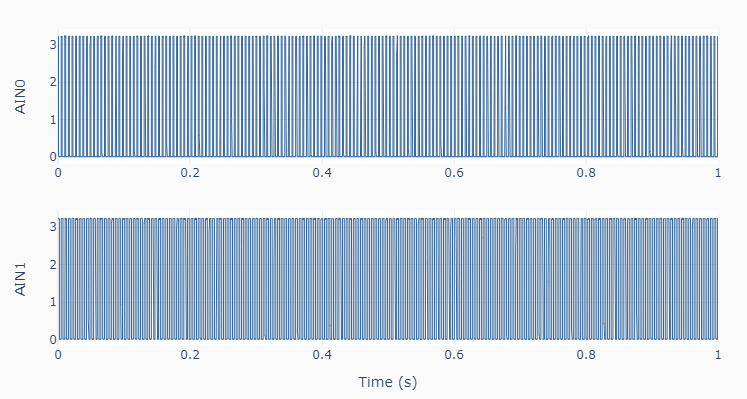
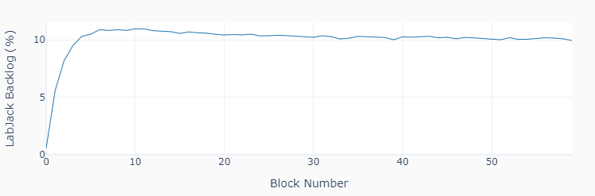

T7 Streaming (internal clock)
For extended or indefinite streaming time, using a PI closed-loop control on the LabJack data backlog will prevent an eventual overflow (or starvation) of the streaming data buffer. This seems to be more critical on the T7 device. This example code also streams two 183 Hz PWM signals into ports AIN0 and AIN1, but for a total of 60 blocks of 0.5 s each. The first figure shows the last 2 blocks of data, while the second figure shows the backlog as a function of time for the 30 s duration of the streaming. The target backlog value is 10%.
 """ t7_streaming_internal.py
Collects streaming data.
Data is acquired at a user-defined `samplerate` up to 100000 samples/s. The
effective sampling rate per channel is the `samplerate` divided by the number
of channels (the default lowest resolution is used for maximum sample rate).
Data blocks are collected at a user-defined `readrate' in seconds. Typical
values of 0.5 seconds are used for high sample rates.
A closed-loop PI controller aiming for a user-defined LabJack backlog is used
to account for oscillations in the sleep time between block retrieves. This is
accomplished by adjusting the duration of the wait between blocks of data in
real time. Once the streaming starts, data must be pulled from the LabJack
buffer at the appropriate rate to avoid an overflow.
The `backlogSP` parameter defines the backlog set point. Values around 10 %
seem reasonable for an itnernal clock streaming. However, `backlogSP` and the
PI gains `kp` and `ki` should be adjusted accordingly based on the application.
The PI loop is especially useful for extended periods of data acquisition on a
T7. On this device, the backlog will drift upwards if a fixed wait time between
blocks is used. To observe that behavior, set `kp=0` and `ki=0`.
Setup:
In this example code, 2 PWM signals are generated on ports FIO0 and FIO4,
which in turn should be connected respectively to ports AIN0 and AIN1.
The LabJack methods in this example are:
set_PWM .......... Sets LabJack configuration for PWM output
set_dutycycle .... Sets duty cycle of PWM output (-100 to 100)
set_stream ....... Sets LabJack configuration for data streaming
get_stream ....... Gets streaming data
stop_stream ...... Stops data streaming
close ............ Closes the LabJack device
"""
import time
import numpy as np
from labjack_unified.utils import plot_line
from labjack_unified.devices import LabJackT7
# Connecting to LabJackT7
lj = LabJackT7()
# Assigning streaming parameters
samplerate = 100000 # Samples/s
readrate = 0.5 # Block size (s)
nblocks = 60 # Number of acquired blocks
portlist = ['AIN0', 'AIN1']
# Creating array with dummy values to enable concatenation
data = np.zeros((1, len(portlist)))
# PI closed loop control of "backlog" size
backlogSP = 10 # Desired "backlog" value (%)
backlog = [] # Backlog data
eprev = 0 # Initial error value
uprev = 1 # Initial execution period adjustment factor
kp = 0.01 # Proportional gain
ki = 0.001 # Integral gain
# Setting a PWM output
lj.set_pwm(pwmnum=2, frequency=183)
lj.set_dutycycle(value1=25, value2=50)
# Configuring and starting streaming
lj.set_stream(portlist, scanrate=samplerate, readrate=readrate)
# Waiting for first block to become available
time.sleep(readrate)
# Executing acquisition loop
for i in range(nblocks):
# Starting computational overhead time watch
t0 = time.time()
# Getting one block of data
dt, datablock, numscans, commbacklog, devbacklog = lj.get_stream()
# Concatenating last 2 blocks of data for plotting
if i > nblocks-3:
data = np.vstack((data, datablock))
# Calculating backlog error to set point value
e = backlogSP - devbacklog
# Calculating execution period adjustment factor
u = uprev + kp*(e-eprev) + ki*readrate*e
# Updating previous values
eprev = e
uprev = u
# Storing backlog
backlog.append(devbacklog)
# Showing statistics
print('Block :', i+1)
print('Scans :', numscans)
print('Comm Backlog : {:0.1f}'.format(commbacklog))
print('U3 Backlog : {:0.1f}'.format(devbacklog))
# Pausing taking into account computation overhead
thead = time.time()-t0
time.sleep(max(0, u*(readrate-thead)))
# Stopping streaming
lj.stop_stream()
# Closing LabJack
lj.close()
del lj
# Removing first row of dummy data
data = data[1::, :]
# Creating time array
t = dt * np.linspace(0, data.shape[0]-1, data.shape[0])
# Setting x and y arrays for plotting
naxes = len(portlist)
x = [t] * naxes
y = [data[:, i] for i in range(naxes)]
# Plotting results
plot_line(x, y, yname=portlist, axes='multi')
plot_line([np.arange(nblocks)], [backlog], xname='Block Number',
yname=['LabJack Backlog (%)'])